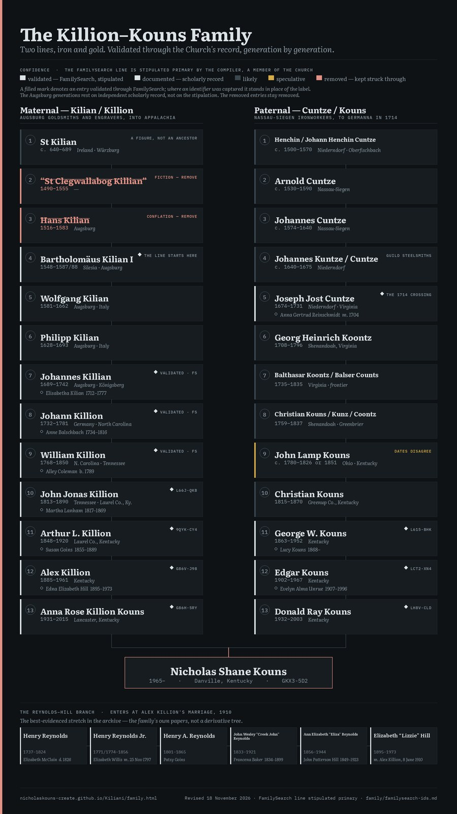
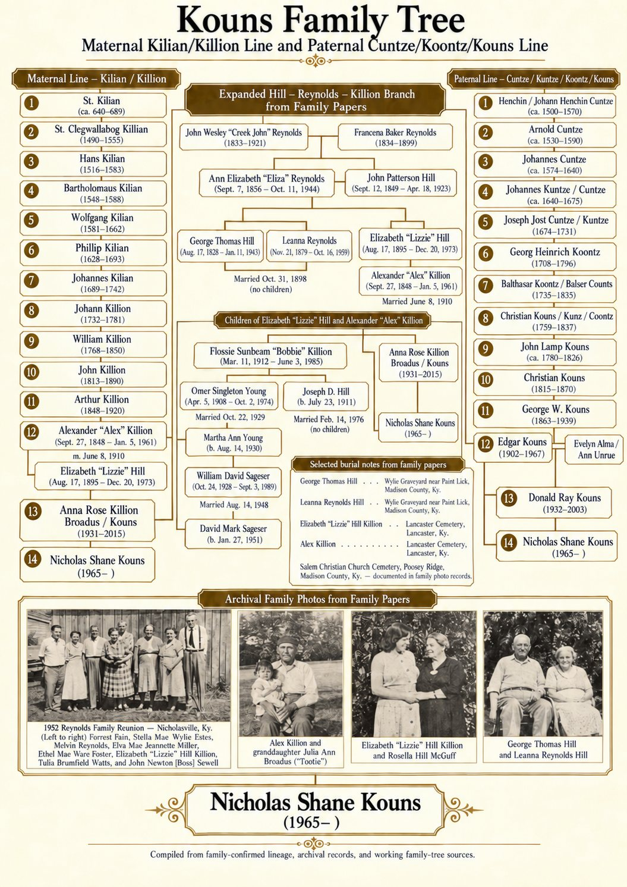
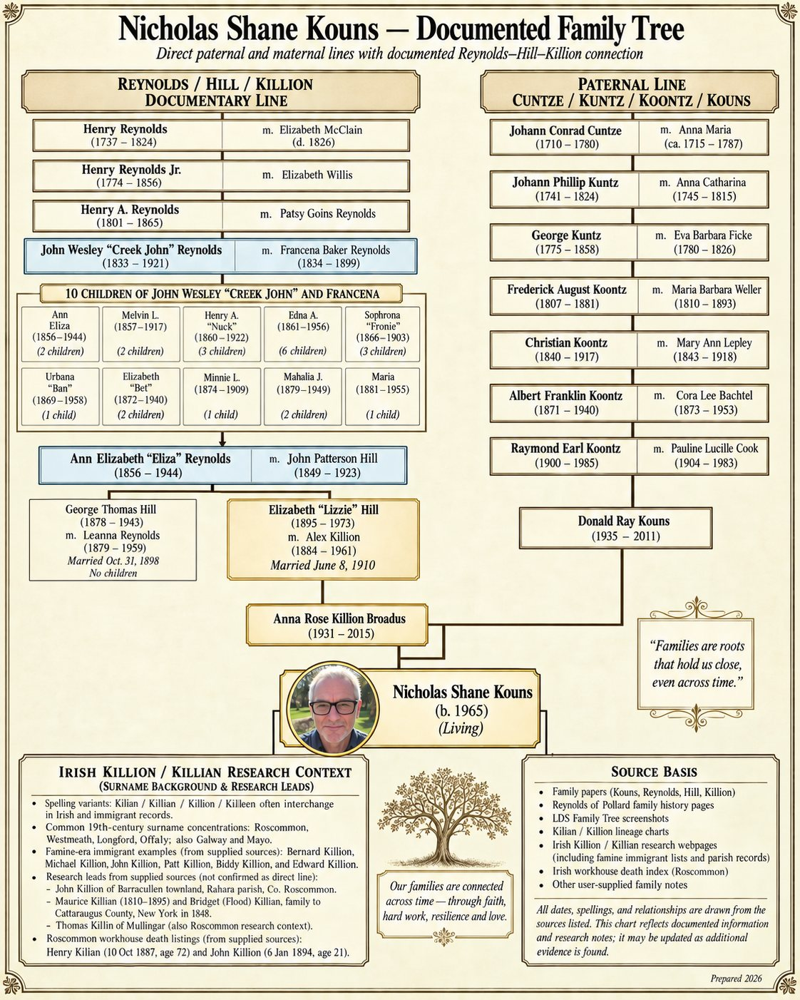
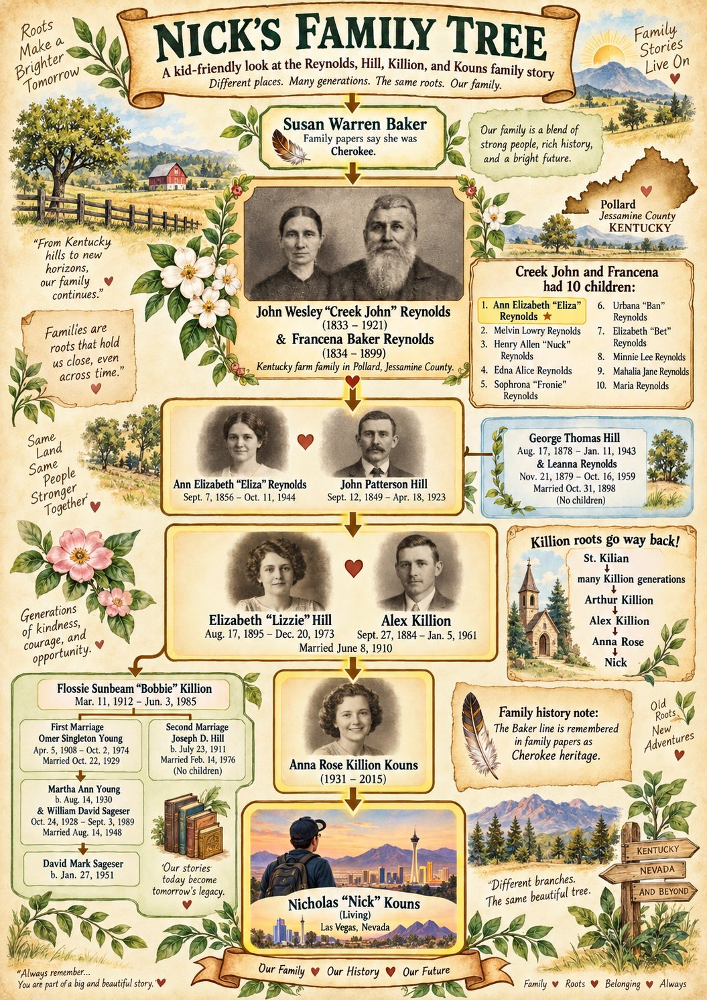
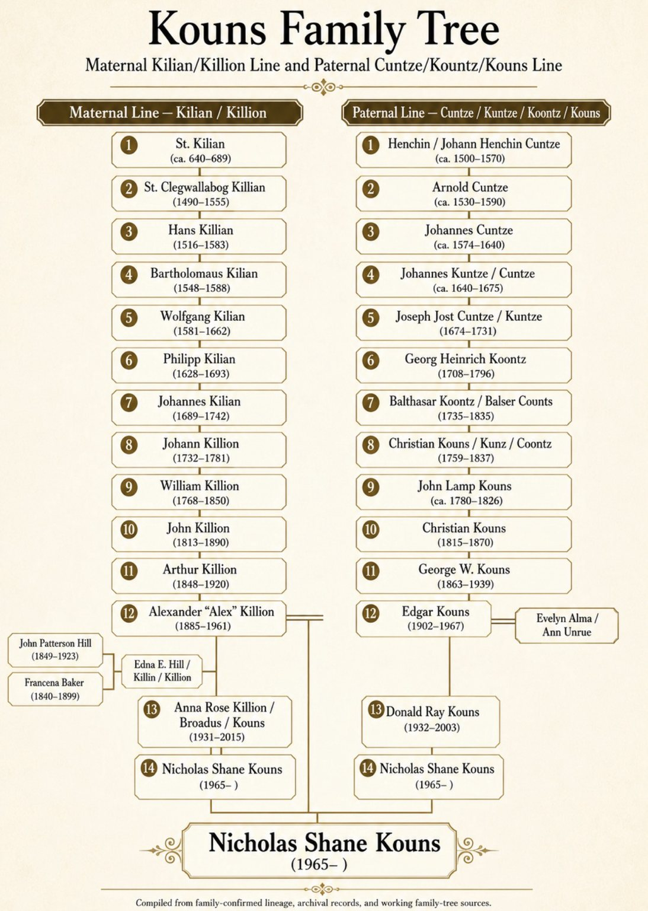
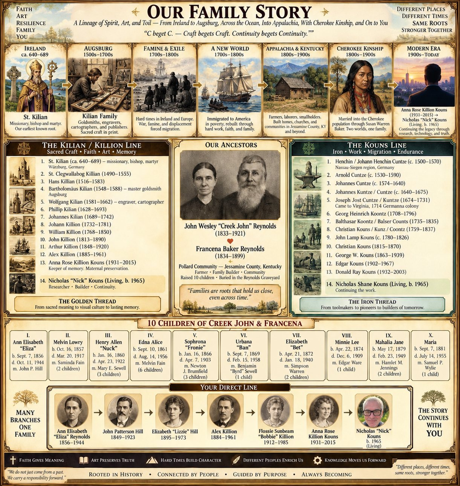
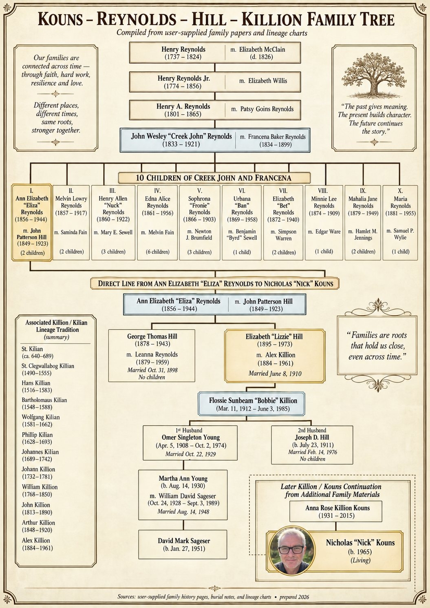
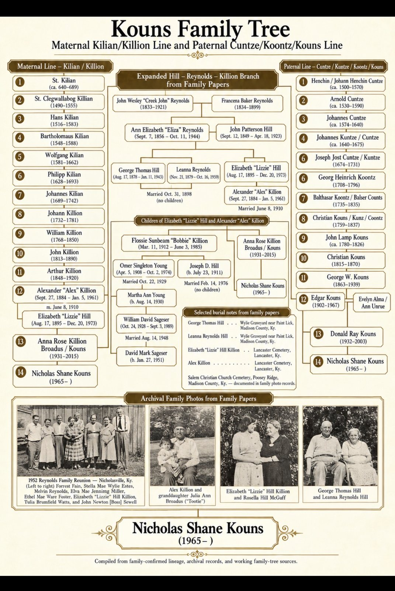
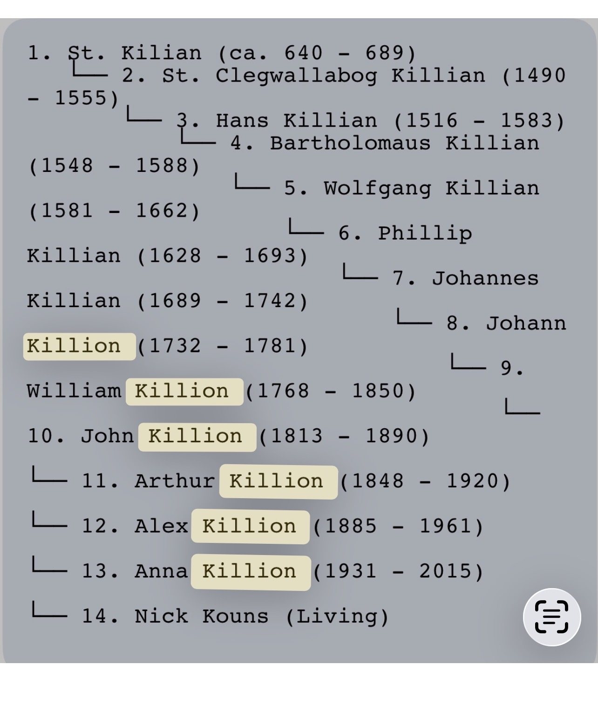
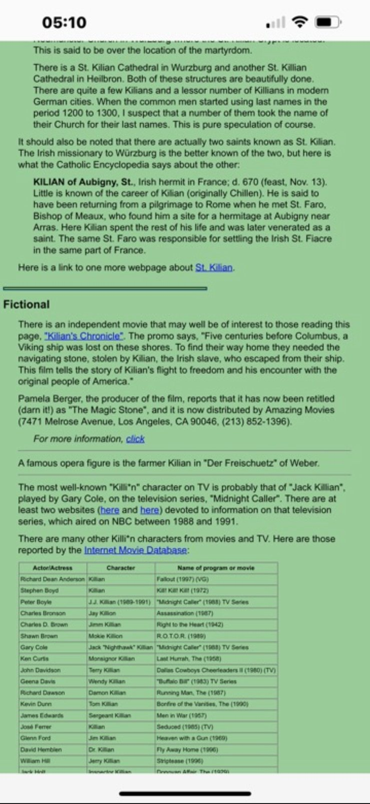

Genealogical record · evidence class E6
Both real. Neither descends from a saint.
The maternal Kilian / Killion line out of Augsburg, and the paternal Cuntze / Kuntze / Kouns line out of Nassau-Siegen. Every generation is graded, the family's own charts are kept exactly as they were issued, and the errors in them are listed rather than quietly repaired.
Boundary
No descent from Saint Kilian is claimed or claimable. No hagiographic source — not the Passio minor, not the Passio maior, not the Vatican manuscript, not any papal text — names a wife, a child, a sibling line or a hereditary estate for Kilian. He is presented throughout as a bishop and itinerant missionary among clerical companions.
The shared name is real and it is not nothing. Killena, Chilianus, Kilian, Killian, Killion is a chain of onomastic and devotional continuity: a saint's name taken up, carried, altered by migration and spelling, and kept. That is a true thing about this family. It is not descent.
A modern plate cannot be its own primary evidence. The earlier lineage documents cited the plates themselves as the record of the sequence the plates asserted. That is circular, and naming it is the point of this section. An earlier plate made St Kilian generation 1 of a thirteen-generation maternal chain. That assertion is withdrawn; the plate is kept, dated, in recensions/.
Stated plainly, because it is stronger than the version that needed a saint.
The maternal line is a craft dynasty. The Augsburg Kilians were goldsmiths who became one of the best-documented engraving houses of early modern Europe. Bartholomäus Kilian the Elder, a goldsmith from Silesia, settled at Augsburg; after his death his widow Maria Pfeiffelmann married the Netherlandish engraver Dominicus Custos, and the Kilian sons Lucas and Wolfgang trained in that workshop. The line then runs through a century of portraiture, cartography, anatomical broadsheets, thesis plates and confessional print. Georg Christoph Kilian became the family's own chronicler; his manuscript Kunst und Ehrengedächtnis des Kilian'schen Geschlechts survives in the Staats- und Stadtbibliothek Augsburg. The family became an archive. This one did too.
The paternal line is an ironworking district. The Cuntze / Kuntze family of Niederndorf and Oberfischbach in Nassau-Siegen are traceable to around 1500 in a region economically defined by iron — Niederndorf had an ironworks by at least 1417, and Johannes Kuntze and all his sons belonged to the steelsmiths' and toolmakers' guild. Joseph Jost Cuntze received permission to emigrate on 31 July 1713 and proved in 1724 that he had arrived in April 1714, with the Germanna colony recruited for Governor Spotswood's Virginia iron enterprise.
Gold and iron are therefore not only metaphors. They name two real regional craft worlds. And the convergence is Appalachian, not medieval: the Killion branch moves into Tennessee and Kentucky, the Kouns branch through Virginia, Greenbrier, Ohio and north-eastern Kentucky, and the two lines meet in twentieth-century Kentucky.
Declared by the compiler
Nicholas Shane Kouns is a member of The Church of Jesus Christ of Latter-day Saints, and stipulates the FamilySearch Family Tree as primary source for this family's line as it stands.
Where this archive's earlier working gradings disagree with it, the FamilySearch line governs. Edna Elizabeth Hill stands. Martha Lanham stands. George W. Kouns, 1863–1952 stands. The Atlantic hinge is closed. Those entries are no longer live disputes; the earlier readings are kept as superseded notes rather than as open questions.
Scope. The stipulation covers the line FamilySearch records, which begins at Johannes Killian (1689–1742). The Augsburg generations above it — Bartholomäus, Wolfgang, Philipp — rest on independent scholarly record and are unaffected. The two removed entries stay removed, and the boundary on Saint Kilian is untouched: it was never a FamilySearch question.
Used identically everywhere in this record.
| Label | Meaning |
|---|---|
| DOCUMENTED | anchored in a primary record, or an authoritative museum, library or biographical reference |
| LIKELY | consistent derivative reconstruction; the underlying record has not been inspected |
| SPECULATIVE | uncorroborated, or in tension with stronger evidence |
| REMOVE | fiction, or two people fused into one; kept on this page only so the correction is visible |
| Person as printed | Dates | Place | Status |
|---|---|---|---|
| St Kilian (Ceallach) | c. 640–689 | Ireland / Würzburg | A FIGURE, NOT AN ANCESTOR |
| "St Clegwallabog Killian" | 1490–1555 | — | FICTION — REMOVE |
| Hans Kilian | 1516–1583 | Augsburg | CONFLATION — REMOVE |
| Bartholomäus Kilian I | 1548–1587/88 | Silesia → Augsburg | ★ DOCUMENTED — THE LINE STARTS HERE |
| Wolfgang Kilian | 1581–1662 | Augsburg / Italy | DOCUMENTED |
| Philipp Kilian | 1628–1693 | Augsburg / Italy | DOCUMENTED |
| Johannes Jacob Balthasar Kilian | 1689–1742 | Augsburg / Königsberg | SPECULATIVE / UNRESOLVED |
| Johann / Andreas Killion | 1732–1781 | Germany → North Carolina | UNRESOLVED — THE ATLANTIC HINGE |
| William Killion | 1768–1850 | North Carolina → Tennessee | LIKELY |
| John J. Killion | 1813–1890 | Tennessee → Laurel Co., Ky. | LIKELY |
| Arthur L. Killion | 1848–1920 | Laurel Co., Kentucky | LIKELY → SPECULATIVE |
| Alexander / Alex J. Killion | 1885–1961 | Kentucky | LIKELY |
| Anna Rose Killion Kouns | 1931–2015 | Kentucky | DOCUMENTED |
| Nicholas Shane Kouns | 1965– | Danville, Kentucky | DOCUMENTED |
The transatlantic hinge is the weakest documented point in the American stretch, and it is named as such rather than bridged. Generation by generation, with every verdict and its reasoning →
| Person as printed | Dates | Place | Status |
|---|---|---|---|
| Henchin / Johann Henchin Cuntze | c. 1500–1570 | Niederndorf / Oberfischbach | LIKELY |
| Arnold Cuntze | c. 1530–1590 | Nassau-Siegen | LIKELY |
| Johannes Cuntze | c. 1574–1640 | Nassau-Siegen | LIKELY |
| Johannes Kuntze / Cuntze | c. 1640–1675 | Niederndorf | LIKELY — GUILD SMITHS |
| Joseph Jost Cuntze / Kuntze | 1674–1731 | Niederndorf → Virginia | ★ DOCUMENTED — THE 1714 CROSSING |
| Georg Heinrich Koontz | 1708–1796 | Virginia | LIKELY |
| Balthasar Koontz / Balser Counts | 1735–1835 | Virginia / frontier | LIKELY |
| Christian Kouns / Kunz / Coontz | 1759–1837 | Shenandoah → Greenbrier | LIKELY |
| John Lamp Kouns | c. 1780–1826 | Ohio / Kentucky | LIKELY — DATES DISAGREE |
| Christian Kouns | 1815–1870 | Kentucky | LIKELY |
| George W. Kouns | 1863–1939 | Kentucky | UNRESOLVED — MOST URGENT |
| Edgar Kouns | 1902–1967 | Kentucky | LIKELY |
| Donald Ray Kouns | 1932–2003 | Kentucky | DOCUMENTED |
| Nicholas Shane Kouns | 1965– | Danville, Kentucky | DOCUMENTED |
Two versions
One plate in this archive gives a different paternal line entirely, irreconcilable with every other chart, including different dates for Donald Ray Kouns. Both are kept. The two versions, side by side →
A capture of the FamilySearch tree, read against this archive. It settled one thing, unsettled one that had been closed, and opened two more. Every person in the direct line now carries an identifier, so a reader can check rather than take this page's word — the full table →
Re-opened
Alex Killion's wife. This archive had closed it: she was Elizabeth "Lizzie" Hill, and the rival form "Edna E. Hill" was a slip — the given name of Edna Alice Reynolds, her great-aunt, grafted one generation down onto Lizzie's box in one plate. A specific, elegant explanation, and it appeared confirmed.
FamilySearch gives her as Edna Elizabeth Hill, 1895–1973
(G86V-5MT) — one woman whose name contains both disputed forms. If
that is right, the plate was never wrong, the obituary used a short form, and the
contamination this archive diagnosed never happened. The coincidence of a
great-aunt named Edna Alice standing exactly one generation up is still striking,
and could yet be the true account with the slip sitting in FamilySearch instead.
Neither reading is preferred here. Her death certificate, the
Lancaster Cemetery record or the 1910 marriage return settles it.
| Also changed | What now stands |
|---|---|
| Evelyn Alma Unrue — resolved | The plate's "Evelyn Alma / Ann Unrue" is one woman, 1907–1996 (MYPR-BVT), Edgar Kouns's wife, daughter of Edward Enoch Unrue and Martha Ann Deboard |
| George W. Kouns — sharpened | The most urgent paternal problem now has two death years: this archive's 1939 against FamilySearch's 1952 (L615-BHK), plus a wife, Lucy, whom no plate here names |
| Matilda or Martha Lanham — new | Arthur's mother is Matilda in this archive's source and Martha (1817–1869) in FamilySearch. Both derivative; the county marriage record settles it |
| Henry Reynolds Jr. — new | Born 1771 per the family's own typescript, 1774 per this archive. Three years, recorded rather than smoothed |
| Four people — newly named | Susan Goins (1855–1889), Lucy Kouns, Alley Coleman, Anne Balschbach. Goins enters the family twice — Patsy Goins married Henry A. Reynolds two generations up the other branch |
The family's own papers also fill in generations 1 and 2 of the Reynolds line: Henry Reynolds Jr. born in North Carolina, married Elizabeth Willis — daughter of Sherod and Mary Ann Willis, born near Charlottesville — on 25 November 1797 in Madison County, with their seven children named. That page is the archive's own paper, not a derivative tree, and is therefore the better source where the two disagree.
The Church History Biographical Database is a different class of source from a family tree: it was built by Church History Library researchers from company rosters, trail diaries, local Church records and other contemporary documents, and it covers more than 61,000 pioneers and 44,000 missionaries. Four entries in it carry this family's surnames — all four, with their record identifiers →
| Entry | What it records |
|---|---|
| Susan Coons × Jacob Killian Joel Edmunds Company, 1852 | Her birth name is Coons; the database notes that the surname on the roster is "Killion" for both of them. Both of this archive's surnames, in one marriage, a century before Anna Rose Killion married Donald Ray Kouns |
| Eleanor Kouns Mormon Battalion generation | Mother of William Cook Prows, born 1827 in Kanawha, Virginia — the Greenbrier country where this archive places Christian Kouns |
| John Killian, 1796–1858 Elder, North America Mission | Born Lincoln County, North Carolina — the German Kilian settlement of Andreas Killian, who came from Germany in 1732. The same county and decade where this archive's American maternal line begins |
| The Thomas Killian family to Utah, 1851 | Ordinance records prove the journey; the company is still unidentified. The mother appears as Miriam Elizabeth Demaris on one entry and Sampson on another — a conflict inside the register itself, logged not reconciled |
These are surname matches in a records-based register. None is yet tied to this line. They are filed because three of the four land on the right surname, region and decade, and because the rosters that would settle them can be named: the Joel Edmunds Company roster for 1852, the Lincoln County records for Philip Killian's household, and the Kanawha County records for Eleanor Kouns's parentage.
The family's own charts, kept exactly as they were made. They are not
corrected in place: where a plate contains an error the error is listed beneath
it and the plate stays as printed — the same principle that keeps the first
Passio source plate intact in recensions/. None of these
errors diminishes the plates. They preserve material — the burial notes, the 1952
reunion photograph, the ten siblings with their spouses and child counts — that
exists nowhere else in this archive.

Both lines side by side, the Reynolds–Hill branch beneath, converging. Confidence
is drawn rather than described: a coloured spine and a mono label on every card.
The two removed entries are kept and struck through, because a chart that hides
its corrections is worth less than one that shows them. Revised 18 November 2026 under the stipulation above, by
tools/make_family_plate.py, so it regenerates when a verdict changes.

The fullest: both lines, the Hill–Reynolds–Killion branch, burial notes, and four archival photographs including the 1952 Reynolds reunion at Nicholasville.
Known errors. Alex Killion given as 27 Sept 1848 – 5 Jan 1961, which is 112 years; read 1884 — the 1848 comes from Arthur Killion directly above. George Thomas Hill given as 1828–1943, which is 115 years; three other plates give 1878.

Fourteen generations each, maternal and paternal in parallel columns.
Known errors. "Edna E. Hill" stands in Elizabeth "Lizzie" Hill's position; Edna Alice Reynolds was Lizzie's great-aunt. Francena Baker given as 1840–1899; other plates give 1834.

The Reynolds line from 1737, the ten children of Creek John and Francena, and the direct descent. The best-evidenced stretch in the whole record.

The narrative version — seven eras, the golden thread and the iron thread, Ireland to Augsburg to Appalachia.
Reads as narrative. It opens the maternal line at St Kilian. The boundary above governs: that is devotional continuity, not descent.

Made for the nieces and nephews. Same lines, fewer dates, more pictures.

Fourteen generations as plain text, which is how the sequence travelled before it was ever drawn.
Carries both removed entries. "St Clegwallabog Killian" and the fused "Hans Killian" are both present here, which is useful: it shows where they entered.

A different paternal line entirely, irreconcilable with every other plate here, including different dates for Donald Ray Kouns. Kept because the disagreement is itself the finding.

Kilian of Aubigny, the Heilbronn claim, and a surname-from-church hypothesis its own author calls "pure speculation". This site is the single source of all five Irish leads in the archive. Its author labels his own speculation as speculation, which is more than many published sources manage.

Killian characters in film and television, Kilian's Chronicle, and the farmer Kilian in Der Freischütz. Kept because the name's reach in popular culture is part of why the chain is easy to over-read.
Full-resolution originals: family/plates/ →
Reynolds, Hill, Killion — the best-evidenced stretch in the archive, with burial places and the ten children of Creek John and Francena.
Polygenetic. Irish Ó Cillín on one root, the German baptismal Kilian on the other. Two unrelated origins, one spelling.
The engravings, maps and portraits, with accession numbers — Budapest, the British Museum, the Augsburg State Library.
All five, with three corrections and a record set named for each.
Where the archive's own documents contradict each other, held open rather than resolved by preference.
The prioritised archival checklist — what to request, from which repository, in what order.